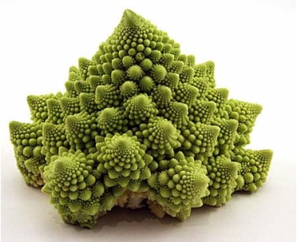
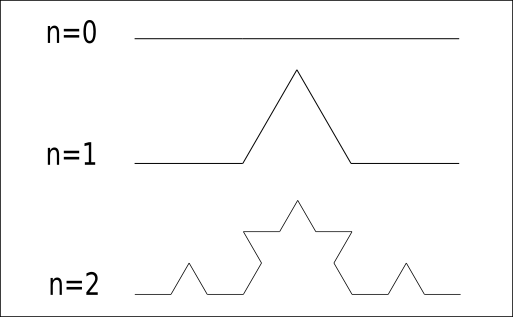
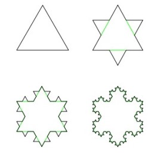
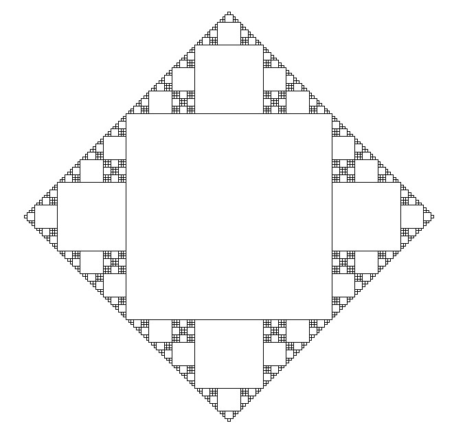
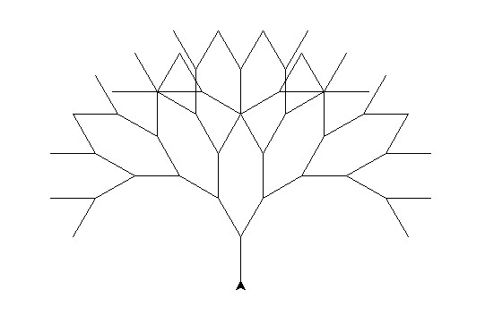
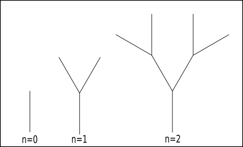

TP : Les fractales#
Une figure fractale ou fractale est une courbe ou surface de forme irrégulière ou morcelée qui se crée en suivant des règles déterministes ou stochastiques impliquant une homothétie interne. Le terme « fractale » est un néologisme créé par Benoît Mandelbrot en 1974 à partir de la racine latine fractus, qui signifie brisé, irrégulier . Un des plus beaux exemples de fractale donné par la nature est le chou Romanesco:
Si l’on ne regarde qu’une des pointes, on a l’impression de voir un chou en entier. C’est le principe d’auto-similarité. On retrouve de l’auto-similarité dans les fougères (ci-dessous) : chaque feuille ressemble à la fougère entière.
Le flocon de von Koch#
Le flocon de von Koch est l’une des premières courbes fractales à avoir été décrite (bien avant l’invention du terme « fractal(e) »). Elle a été inventée en 1906 par le mathématicien suédois Helge von Koch.
La courbe de von Koch se réalise à patir d’un segment de droite, en modifiant récursivement chaque segment de droite de la façon suivante :
On divise le segment de droite en trois segments de longueurs égales.
On dessine les 4 morceaux de segments de longueur le tiers du segment en effectuant des rotations pour obtenir la forme.
on recommence le processus sur chacun des 4 morceaux de segments.
Au bout de ces trois étapes, l’objet résultant a une forme similaire à une section transversale d’un chapeau de sorcière. La courbe de von Koch est la limite des courbes obtenues, lorsqu’on répète indéfiniment les étapes mentionnées ci-avant.
{kind=link}
Le flocon de von Koch s’obtient de la même façon que la fractale précédente, en partant d’un triangle équilatéral au lieu d’un segment de droite, et en effectuant les modifications en orientant les triangles vers l’extérieur.
{kind=link}
La fonction courbe_van_koch(n,l) prend en paramètre le nombre de répétitions du modèle obtenu lorsque n=1 et la longueur initiale l du segment. Cette fonction dessine la courbe de Van Koch.
Écrire une fonction qui dessine le flocon de Van Koch à partir d’un triangle équilatéral.
Récrire vos deux fonctions en y apportant les modifications nécessaires pour que le modèle initial ressemble à la figure suivante:
{kind=link}
Réaliser une fractale avec n=5.
Construire une figure superposant les fractales pour n=0 jusqu’à n=5 (figure ci-dessous).

{kind=link}
L’arbre#
Reproduire cette fractale arborescente avec un niveau de récursivité égal à 5. Le motif initial est un Y.
{kind=link}
Voici quelques indications :
Commencer par les 3 premiers arbres représentés ci-dessous:
Les angles de rotation sont de 30 degrés.
Une fois le tracé d’un trait réalisé, il faut revenir en arrière avec la commande
backward()
{kind=link}